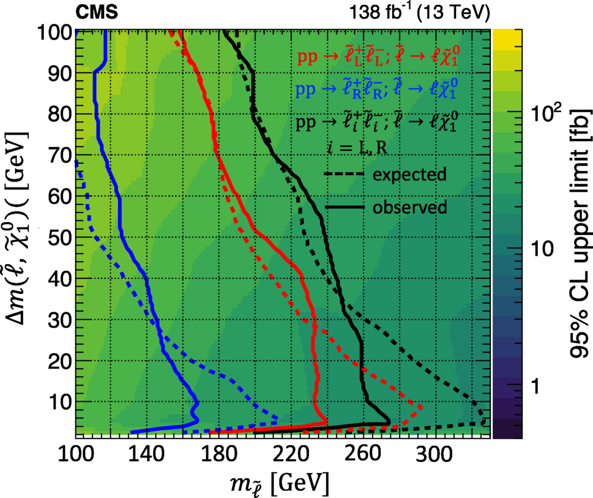
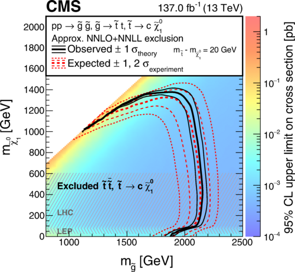
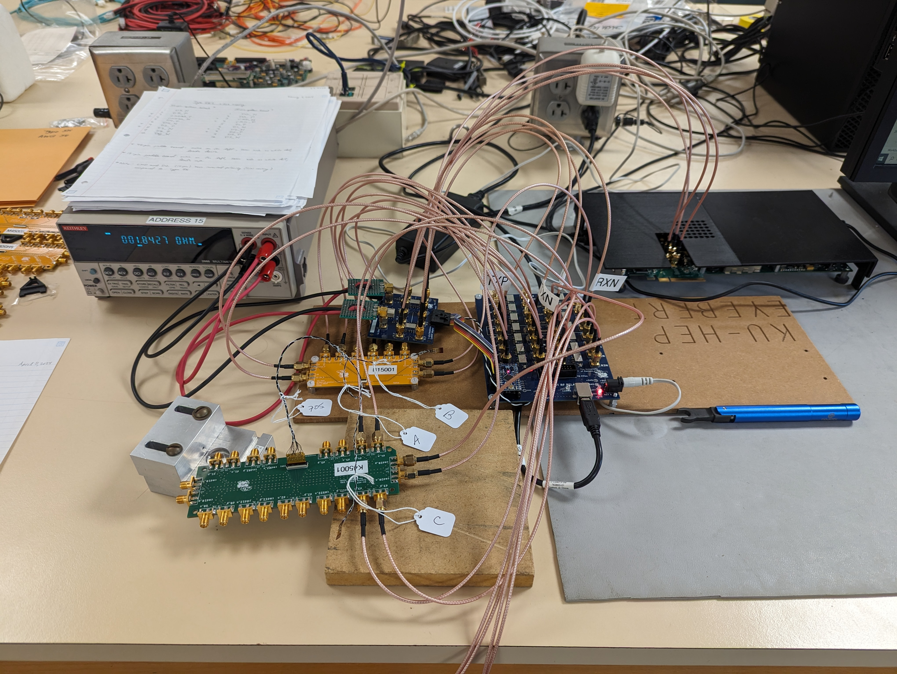
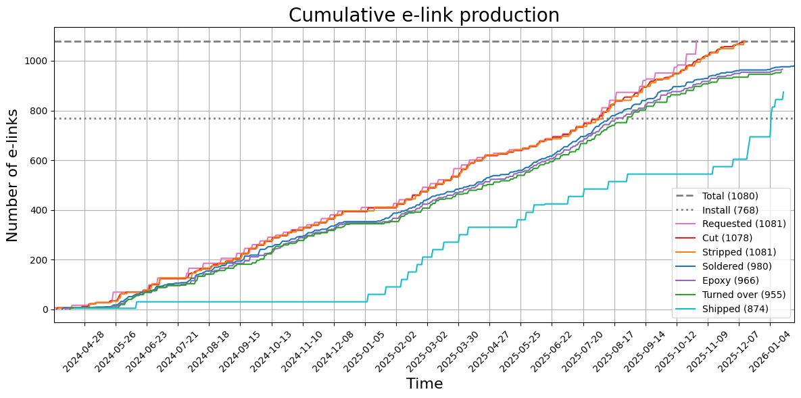

Projects
Work Projects
- Search for compressed supersymmetry: Analyzed CMS data and Monte Carlo simulation (billions of events) using over 2,000 independent search regions in a data-driven fit to search for supersymmetric particles in compressed mass senarios. Used ML algorithms (DNNs) to identify bottom quarks.
- Search for supersymmetric top quarks: Analyzed CMS data and Monte Carlo simulation (billions of events) to search for supersymmetric top quarks. Used data-driven analysis to predict the Z to neutrinos background and associated uncertainties. Used ML algorithms (DNNs) to identify top/bottom quarks and W bosons.
- Automated e-link testing: Collaborated with an electrical engineer to develop and maintain automated electrical testing framework (Python) to test high speed electrical cables (e-links). Reduced testing time by a factor of 10. Framework used to test over 1,000 e-links for the CMS pixel tracker upgrade.
- Visualizing e-link production: Created visualization of e-link production for each stage over time (Python, Pandas, NumPy, Matplotlib). Presented visualization in status updates and demonstrated that project was projected to finish ahead of schedule by about 1.5 years.
- Testing electronic readout cards: Created and maintained software with a team at Fermilab, including GUI, database, and website (Python, Tkinter, Django, Bash), to test over 700 electronic readout cards for the CMS hadron calorimeter upgrade.
- Automated bit error rate scans: Automated bit error rate tests (BERT), scanning over a range of driver signal amplitudes (C++, Python, Bash). Used for system tests with e-links to validate full readout chain (with optical and electrical links) using FC7, port card, and RD53 chip.
- Automated database upload: Collaborated with a database maintainer to automatically create new e-links, update info, and upload results (Python, Bash, SQL). Uploaded results for over 300 e-links, eliminating 50 hours of manual labor.
- Wire length calculator: Calculates the total length of wire used (including waste) to make a given number of e-links of a given type (Python). Validated and eliminated the need for manual calculation.

Search for compressed supersymmetry
Analyzed CMS data and Monte Carlo simulation (billions of events) using over 2,000 independent search regions in a data-driven fit to search for supersymmetric particles in compressed mass senarios. Used ML algorithms (DNNs) to identify bottom quarks.

Search for supersymmetric top quarks
Analyzed CMS data and Monte Carlo simulation (billions of events) to search for supersymmetric top quarks. Used data-driven analysis to predict the Z to neutrinos background and associated uncertainties. Used ML algorithms (DNNs) to identify top/bottom quarks and W bosons.

Automated e-link testing
Collaborated with an electrical engineer to develop and maintain automated electrical testing framework (Python) to test high speed electrical cables (e-links). Reduced testing time by a factor of 10. Framework used to test over 1,000 e-links for the CMS pixel tracker upgrade.

Visualizing e-link production
Created visualization of e-link production for each stage over time (Python, Pandas, NumPy, Matplotlib). Presented visualization in status updates and demonstrated that project was projected to finish ahead of schedule by about 1.5 years.
Testing electronic readout cards
Created and maintained software with a team at Fermilab, including GUI, database, and website (Python, Tkinter, Django, Bash), to test over 700 electronic readout cards for the CMS hadron calorimeter upgrade.
Automated bit error rate scans
Automated bit error rate tests (BERT), scanning over a range of driver signal amplitudes (C++, Python, Bash). Used for system tests with e-links to validate full readout chain (with optical and electrical links) using FC7, port card, and RD53 chip.
Automated database upload
Collaborated with a database maintainer to automatically create new e-links, update info, and upload results (Python, Bash, SQL). Uploaded results for over 300 e-links, eliminating 50 hours of manual labor.
Wire length calculator
Calculates the total length of wire used (including waste) to make a given number of e-links of a given type (Python). Validated and eliminated the need for manual calculation.
Personal Projects
- Chess in Python: Interactive chess program for human and computer players built in Python using PyGame.
- Speedcubing Android App: Rubik's Cube algorithm Android app built using Android Studio, Kotlin, and Jetpack Compose.